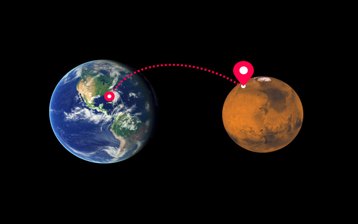
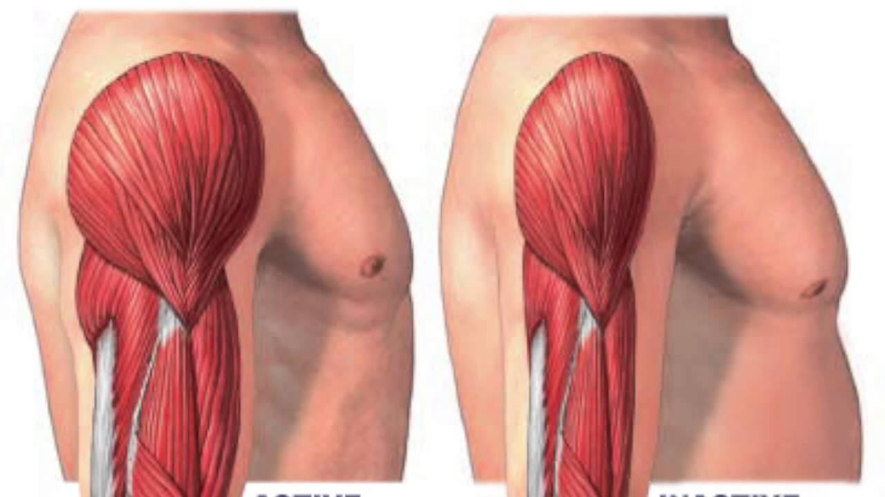

The Problem:
How can astronauts maintain their muscle mass during a trip to Mars?
Loss of bone and muscle mass are the two most common and troublesome changes that occur in the bodies of humans after a significant time in space.
Once they reach Mars, they would be too weak to do anything.

